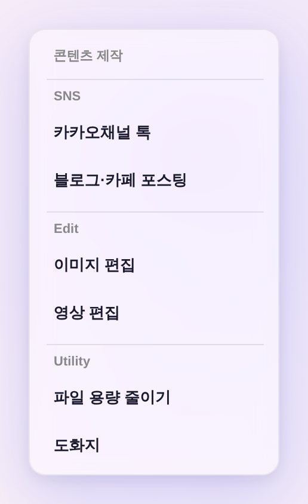
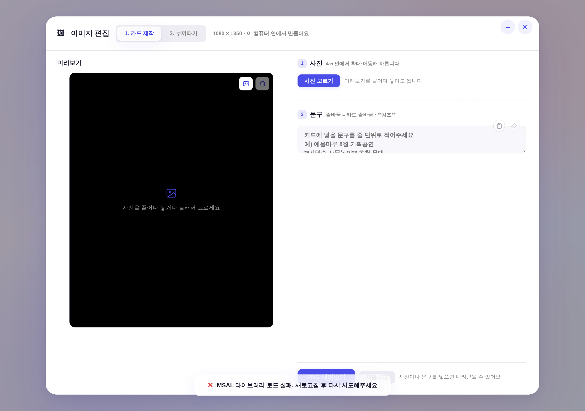
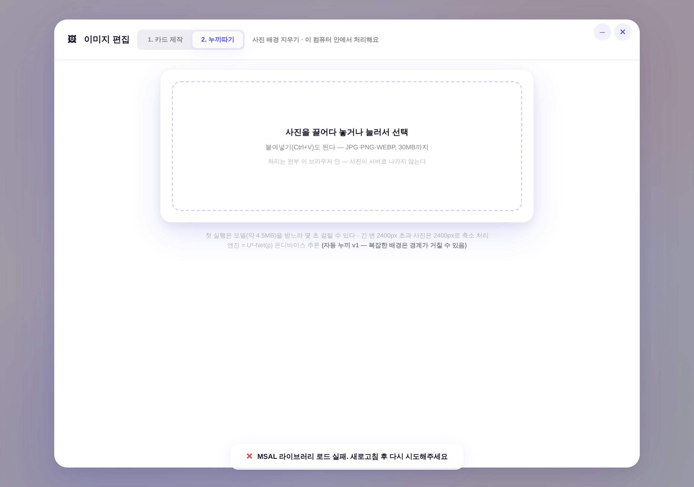

콘텐츠 제작 — 메뉴는 한 겹, 도구는 모달 안 탭
운영자 4차: 「세부 편집툴로 풀 게 아니라, 버튼 누르면 그 모달 안에 포함되게 — 메뉴 안에 메뉴는 없어」 · 3차 드릴인 철거, 분류는 모달 안 탭으로 이동(영상 편집기가 260711부터 쓰던 정본 형태).
메뉴 — 두 겹에서 한 겹으로
전(3차) — 메뉴 안 메뉴(드릴인 ›)

누르면 패널이 슬라이드해 하위 메뉴가 나왔다 = 계층 2겹
후(4차) — 한 겹 6항목

모든 항목이 곧장 도구를 연다 ·
› 표시도, 드릴인 코드(_ddDrill)도 철거「이미지 편집」 버튼 = 모달 하나, 도구는 그 안 탭
탭 문법 = 영상 편집기(#ve-tabs) 정본 그대로(.prog-tab · --neutral 트랙 · 같은 padding) — 신규 부품·색 0.
탭 1 — 카드 제작

기존 본문 그대로(사진 절삭 + 문구 → PNG)
탭 2 — 누끼따기

독립 도구
/cutout/를 모달 안에 임베드 — 새 탭으로 나가지 않는다- 코드 한 벌 유지 — 누끼따기를 앱 안으로 복제하지 않고
cutout/?embed=1로 그대로 얹었다(온디바이스 처리·모델 동봉 전부 그쪽 그대로). - 지연 로드 — 2번 탭을 처음 열 때만 프레임을 만든다. 안 쓰면 모델(4.5MB)·wasm을 아예 받지 않는다.
- 임베드 모드 —
?embed=1이면 도구 자체 제목·앱 배경을 접는다(모달이 이미 제목·서피스를 갖고 있어 중복). 새 탭 단독 열람은 종전 그대로. - 영상 편집은 손대지 않았다 — 이미 모달 안 탭 3개(1 영상 편집 · 2 자막 삽입 · 3 영상 프롬프팅)가 정본이라 4차 원칙과 이미 같다.
🖼 화면 위 「MSAL 라이브러리 로드 실패」 토스트는 촬영 환경(외부 네트워크 차단 = 결정성 확보) 때문이고 이번 변경과 무관하다.
최종 구조
| 구획 | 메뉴(한 겹) | 누르면 | 모달 안 |
|---|---|---|---|
| SNS | 카카오채널 톡 | openKakaoDesigner() | — |
| 블로그·카페 포스팅 | openNaverBlogTool() | — | |
| Edit | 이미지 편집 | openCardMaker() | 탭 2 — 1 카드 제작 · 2 누끼따기(임베드) |
| 영상 편집 | openVideoEditor('edit') | 탭 3 — 1 영상 편집 · 2 자막 삽입 · 3 영상 프롬프팅 | |
| Utility | 파일 용량 줄이기 | openFileSlimmer() | — |
| 도화지 | openBookingProcess() | — |
숨김 유지 6종(로고 제작·한글문서 편집·오피스문서 편집·문서 → 마크다운·링크 자료수집·에니어그램) — 주석 보존이라 롤백 1줄, 함수·CSS·딥링크는 생존.
검증 (헤드리스 실측 — tools/scratch/shot_contentmenu_ba.mjs)
| 확인 | 결과 |
|---|---|
드롭다운 = 한 겹 6항목 · › 표시 0 · _ddDrill 전역 부재(철거 확인) | PASS |
| 모달 제목 「이미지 편집」 · 탭 = 1 카드 제작 / 2 누끼따기 · 기본 탭 = 카드 제작 | PASS |
누끼따기 프레임은 탭을 열기 전엔 없음(지연 로드) · 열면 cutout/?embed=1 생성, 도구 본체(드롭존) 로드, is-embed 적용, 자체 제목 접힘 | PASS |
| 영상 편집기 탭 3종 무변 · 모바일 아코디언 = 데스크탑과 동일 6항목(분기 소멸) | PASS |
pageerror 0 · check_design 통과(raw hex 1578 무변) | PASS |
🔬 하네스 조건 2가지가 강제됐다: ① 누끼따기가 디렉터리 인덱스(
cutout/)로 임베드돼 file://로는 못 연다 ② index.html 머리의 http→https 강제 리다이렉트 때문에 로컬 http 서버로도 못 띄운다 → 가상 https 호스트를 라우트 이행으로 만들어 실서빙(GitHub Pages)과 같은 출처·프로토콜로 검사한다.